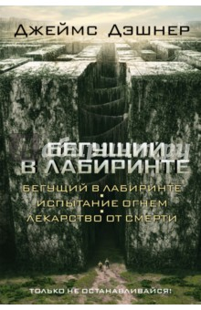

От переводчика: Это было непросто. Мальчишки, живущие в Лабиринте, разговаривают, обильно уснащая свою речь сленговыми словечками, значения которых они зачастую и сами не понимают. Автор, Дж. Дашнер, попросту изобрёл эти слова. Например, слово "шенк". Его нет в английском языке, вернее, есть в американском уличном жаргоне, но означает нечто, не имеющее к событиям и реалиям "Лабиринта" никакого отношения. Так по-приятельски, а иногда с сарказмом или издёвкой, называют друг друга обитатели Приюта. Я оставила это слово без перевода и без изменений - уж больно оно ёмкое и звучит хлёстко. То же самое и с "гривером". Сначала я остановилась на варианте "жалун" - потому что эти чудовищные киборги жалят и стонут, словно жалуются; но в этом слове нет того грозного рыка, что имеется в "гривере". Поэтому оно тоже оставлено, как в оригинале. Значение других выдуманных слов будет, я надеюсь, ясно из контекста. Выражаю свою огромную признательность Linnea за великолепную безжалостную редактуру и неоценимую помощь в вычитке и чистке текста. Её, по существу, можно по праву назвать соавтором перевода. Также огромная благодарность Вадиму Кузнецову, одному из создателей fb2 конвертора для OpenOffice. Спасибо, друзья!